Étant donné que nous serons rarement amenés à faire cela dans le futur nous avons choisi de faire un jeu en csharp. On a essayé de s’inspirer de jeux déjà existants pour les concepts de base tout en réfléchissant à des idées nouvelles qui pourraient les améliorer, les rendre plus intéressants en y laissant une marque propre. Énormément de concepts sont passés mais l’idée d’un jeu avec des vagues de morts-vivants a été retenue car elle est à la fois simple et compréhensible par tous et elle va de paire avec un côté que l’on voulait très “challengeant” du jeu c’est à dire la survie dans des vagues de plus en plus dures. Après quoi l’idée nous semblait très basique et nous avons cherché (et chercherons encore) à l’améliorer et à la rendre plus originale que des Call Of ou un Left 4 Dead (jeux avec le même principe) on a donc envisagé des pistes sur un jeu à la troisième personne vu du dessus avec un style un peu “cartoon” qui se rapprocherai de Brawl stars/Don't Starve Together dans les graphismes. Cependant, ces idées sont encore au stade d’ébauche que l’on n’est pas surs de garder pour le jeu final. La chose certaine c’est que l’on aimerait ajouter dans un second temps de la réalisation du projet une fibre plus originale. Ce projet va être pour nous tous l’occasion de travailler en équipe sur de la programmation, ce que l’on n'avait jamais fait jusqu’ici et de se répartir les différentes tâches tout en ayant un œil sur ce que fait l’ensemble du groupe et nous permettre de mettre en pratique les choses apprises sur quelque chose de concret. Le but pour nous va être de se rendre compte des problèmes qui peuvent se poser lors de la conception du jeu, comment les contourner et comment fonctionnent les outils de modélisation, le son, la mise en place d’un site dédié au projet et le code qui englobe tous ces aspects.
. . . . .
Screens et avancement
MAP
1ère map du jeu
La 1ère version de la map était en fait le terrain sans aucunes structures. Il y avait déjà les montagnes et les différentes textures (terre, herbe...).
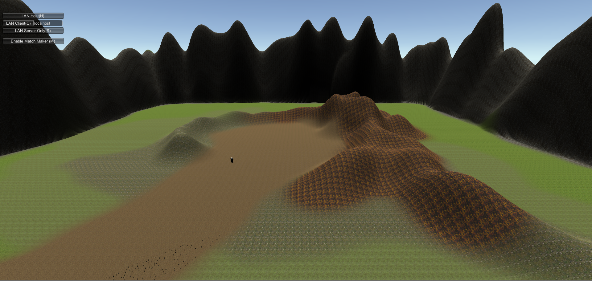
2ème map du jeu
Ensuite, nous avons ajouté les premiers arbres pour remplir un peu cette map.
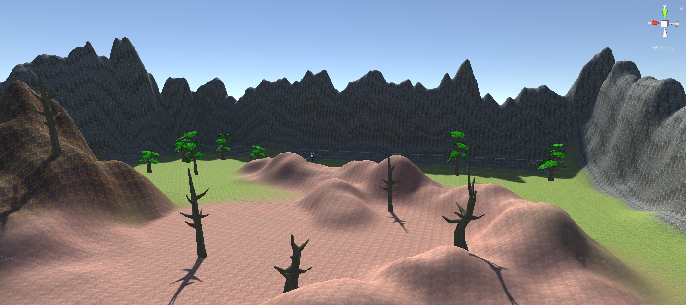
3ème map du jeu
Après les arbres, les premières "vraies" structures ont été ajoutées : un petit village, un cimetière.
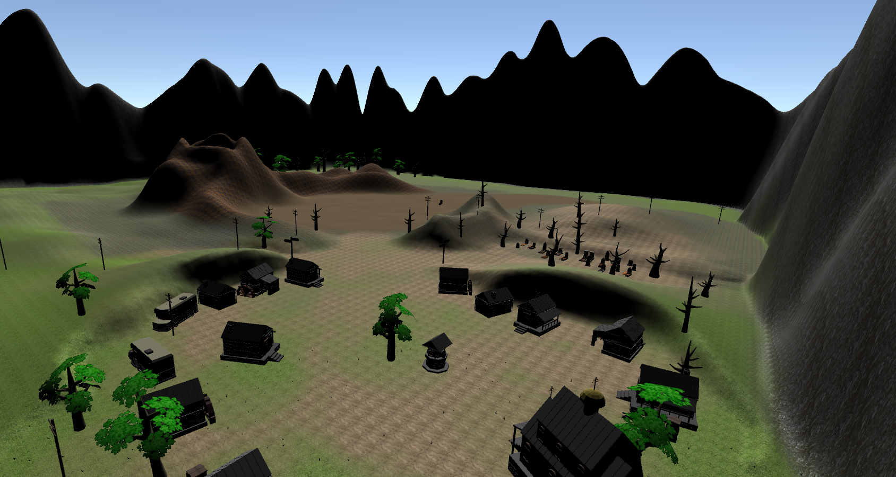
4ème map du jeu
Finalement, pour la version finale de la map, nous avons ajusté la luminosité pour créer un effet de nuit et que le rendu des couleurs soit meilleur.
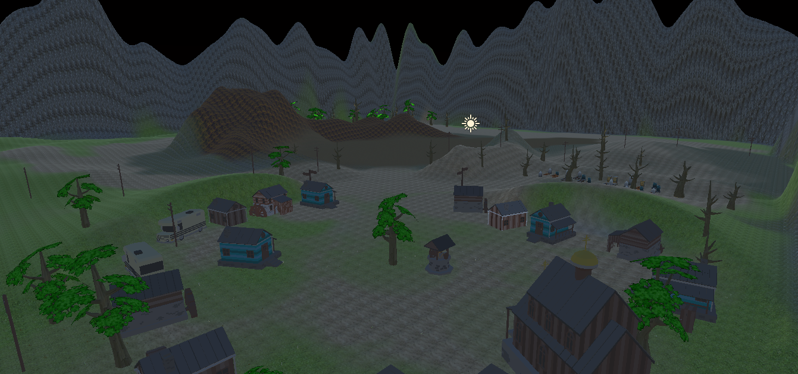
Modèle du joueur et de l'arme
1ère version
Le 1er modèle, que ce soit de l'arme ou du joueur, n'était fait qu'avec les objets 3D de Unity (capsule pour le joueur, assemblage de cubes pour l'arme).
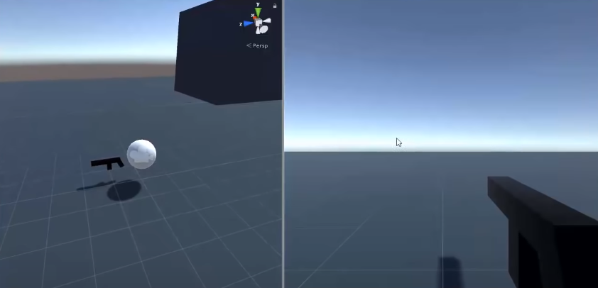
2ème version
Pour la 2ème version, nous avons coloré le joueur et ajouté un premier vrai modèle coloré à l'arme (provenant d'un asset gratuit dans l'Asset Store de Unity).
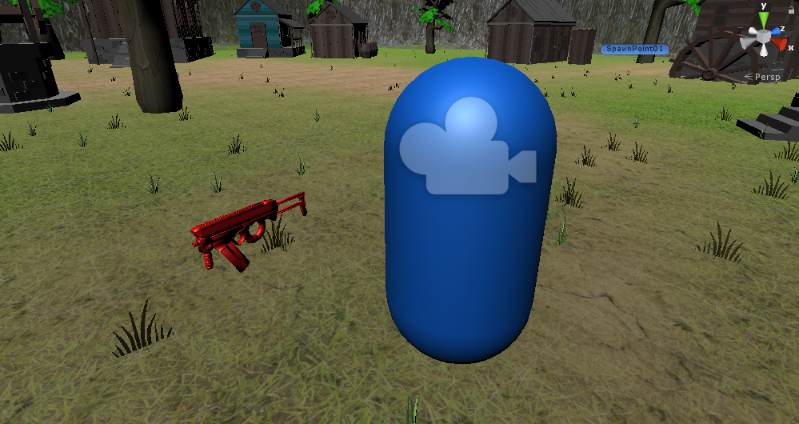
3ème version
Le modèle final du joueur est un asset gratuit de capsule volante. Quant à l'arme, nous avons ajouté des motifs plus réaliste qu'une simple couleur rouge.
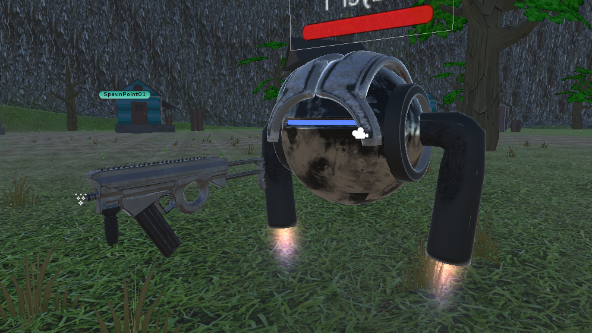
INTERFACE DU JEU
1ère version du Menu
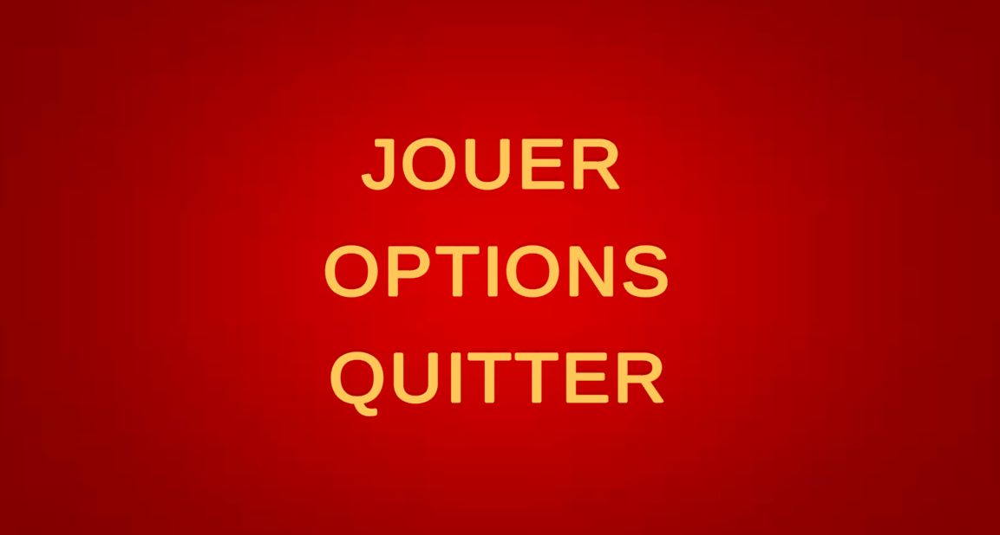
2ème version du Menu
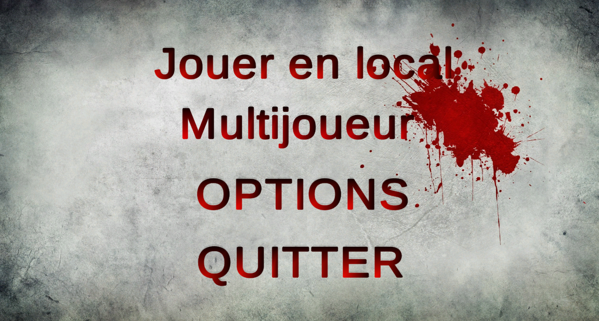
HUD DU JEU
1ère version de l'HUD
La 1ère version de l'HUD était très simple : deux petits rectangles repréentaient respectivement la barre de vie du joueur et son argent disponible. De plus, le joueur pouvait voir son score en bas de l'écran.
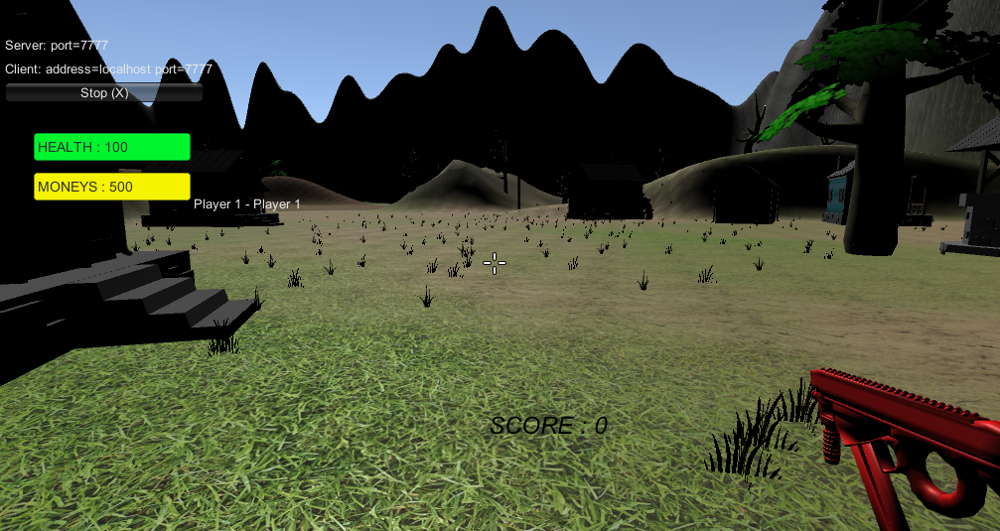
2ème version de l'HUD
Pour cette 2ème version de l'HUD, nous avons ajouté des images plus cartoon pour la barre de vie, les munitions.
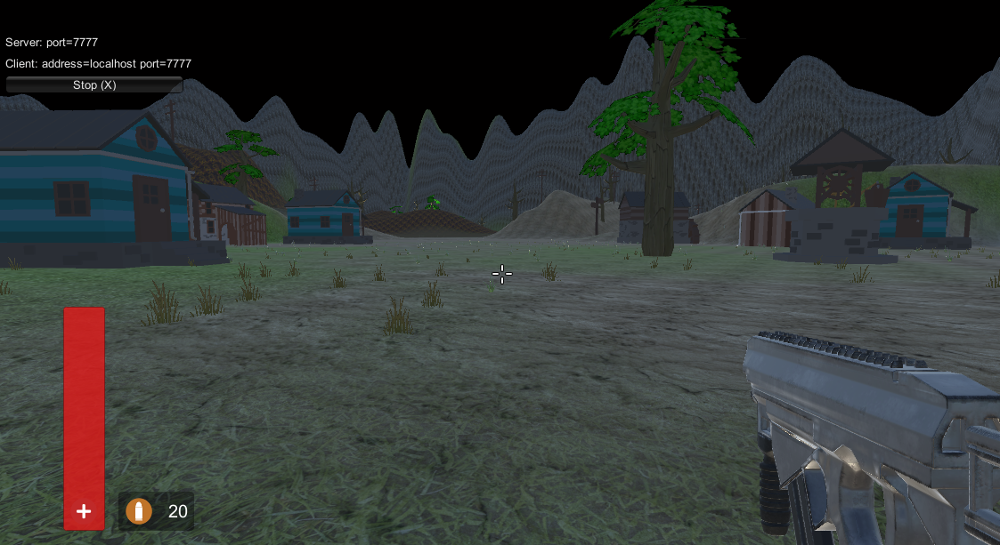
Nous avons aussi ajouté un tableau des scores à part entière (lorsque le joueur appuie sur TAB).
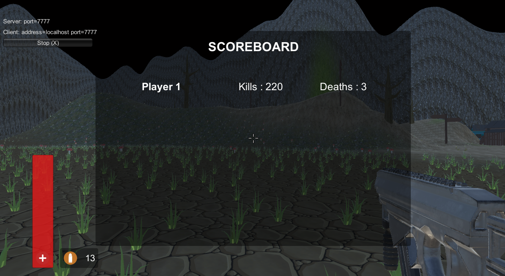
Pour finir, nous avons aussi modifié l'HUD de la boutique.
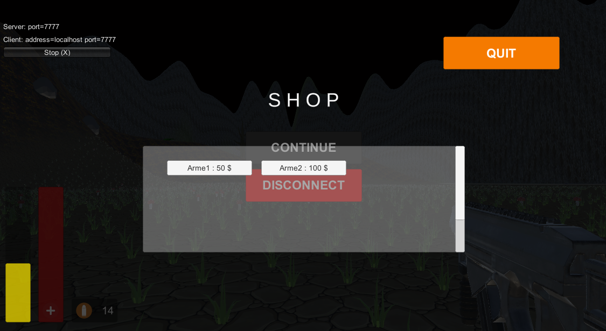
Ennemis
1ère version
Le 1ère version des ennemis n'étaient en réalité que des objets 3D de Unity (ici, des boules roses volantes) en attendant d'avoir un vrai modèle plus réaliste.
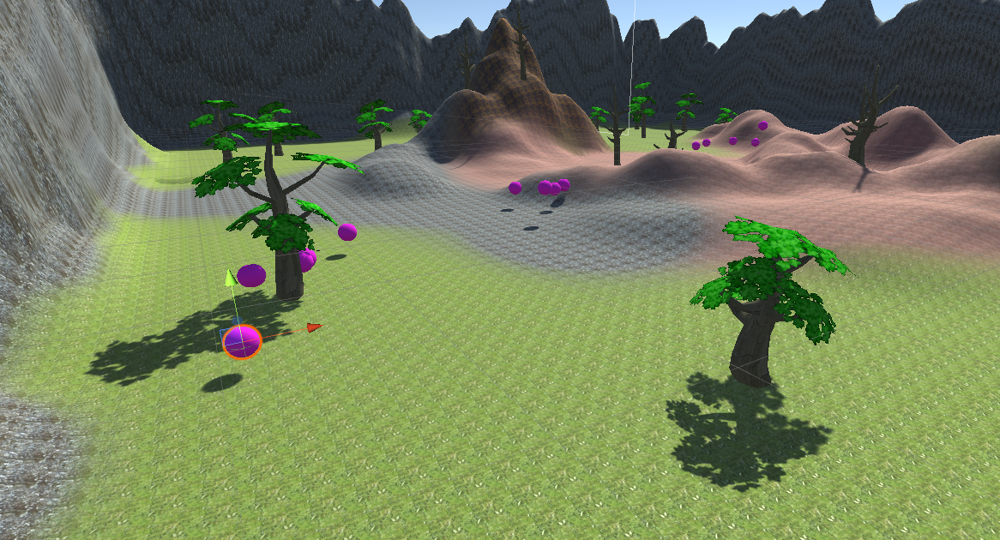
2ème version
Pour la 2ème version, nous avons importé un modèle zombie déjà fait sous Unity, mais ce dernier n'avait encore aucune animation (même lorsqu'il courrait vers le joueur).
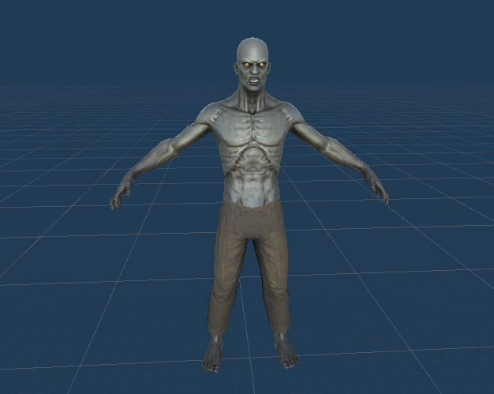
3ème version
Ensuite, nous avons donc logiquement ajouté une animation de course aux zombies (pour que le joueur les voit courir vers lui lorsque ces derniers le "rush").
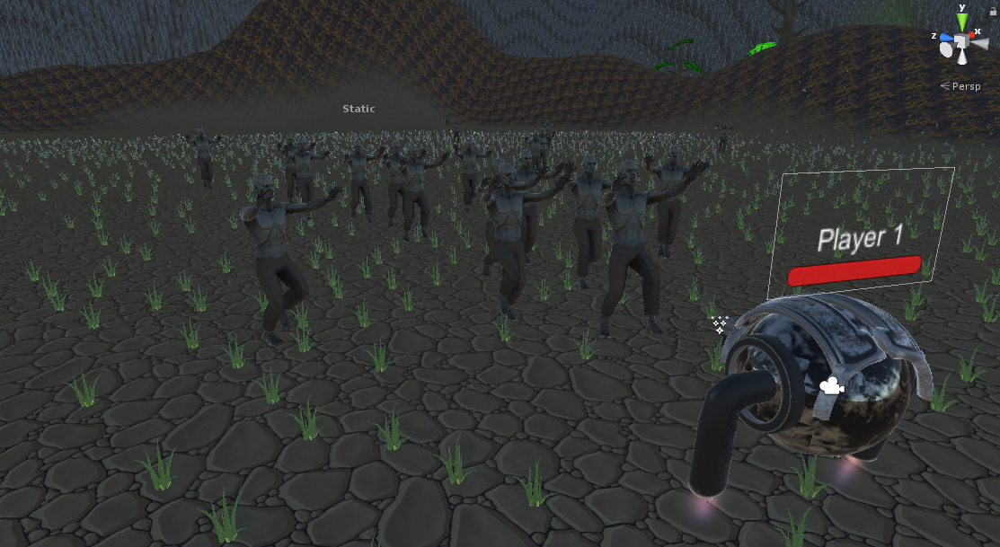
4ème version
Pour la 4ème version, nous avons ajouté une animation d'attaque aux zombies.
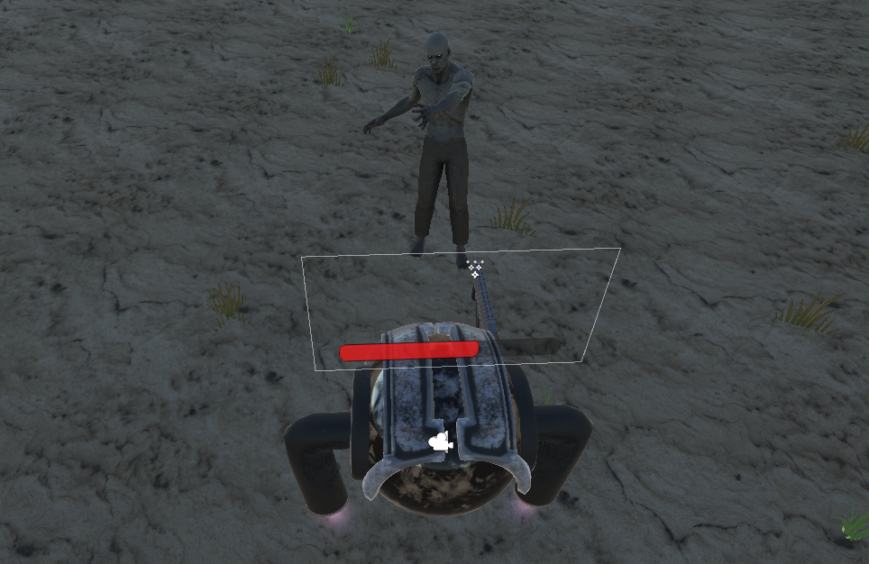
5ème version
Pour finir, nous avons ajouté une animation de mort aux zombies.
Commentaires de chacun des membres
Alexandre
Ce projet de S2 a été le plus gros projet que j’ai pu réaliser jusqu’ici. En effet, mis à part quelques travails de groupe effectués au lycée (comme le TPE par exemple),
je n’ai jamais eu de réelles expériences de projet sur plusieurs mois comme celui-ci. Ce dernier m’a permis de découvrir ce qu’était vraiment un travail de groupe, en situation,
à longue durée, avec ses réussites et ses échecs. De plus, je me suis rendu compte de ce qu’impliquait de réaliser un projet de cette ampleur, c’est-à-dire réaliser et respecter un cahier des charges
(gérer la répartition des tâches et l’avancement du projet), faire un rendu sous forme de rapport à chaque soutenance etc. L’expérience du groupe fut bénéfique en tous points, enseignant la gestion d’un groupe,
du travail à fournir par chacun, ainsi que l’organisation du travail, afin de réaliser des tâches pour les soutenances. Ce fût une riche expérience sur le plan décisionnel.
Il a fallu apprendre à s’écouter, à exposer ses points de vue mais aussi à accepter la critique et en tirer le meilleur possible ; tout le monde y a gagné. J’ai d’ailleurs eu la chance d’avoir un groupe soudé
(malgré qu’un de nos camarades soit parti de l’école), du début à la fin, qui nous a permis à chacun de travailler efficacement et d’arriver à remplir les objectifs fixés.
Aussi, j'ai pu travailler sur à peu près toutes les tâches du projet (maitriser Unity, coder un peu, que ce soit pour le jeu ou le site, gérer l'audio...), c'était enrichissant et intéressant.
Enfin, le fait de voir que notre projet (que ce soit le jeu ou le site) avance petit à petit a été très satisfaisant et je l’ai ressenti comme une récompense des heures de travail que cela à impliquer.
Je garderai donc un plutôt bon souvenir de ce premier projet informatique.
Philippe
Pour moi aussi ce projet a été une première. Evidemment dans ma vie j'ai déjà été amené à faire des projets de groupe,
mais ce projet est le premier d'informatique pratique avec du code partagé à toute l'équipe.
Ce qui pouvait poser de nouvelles difficultés, la communication dans le groupe était encore plus importante pour ne pas
risquer de faire les mêmes scripts voir pire de faire l'inverse de ce qui était décidé. En cela, je me rends compte
aujourd'hui qu'avoir eu un cahier des charges était plus utile qu'en première apparence, il nous a permis de définir
notre sujet et ce qu'on voulait faire. D'autant plus que comme je l'ai expliqué nous n'étions pas certains de ce que
nous voulions faire. Aussi en tant que chef de projet en plus de faire ma partie j'ai coordonné chaque membre pour
ne pas qu'ils "sortent" du sujet. Aujourd'hui je suis fier du résultat et de ce que chaque membre a pu donné même si
entre temps nous avons perdu Gabriel Laroche qui a quitté le projet et Epita. Pour ma part, maintenant je me sens à
l'aise avec Unity et certains aspects des scripts Csharp que nous ne pouvions pas voir en TP et cela m'a permis de voir
le concret qu'il y avait derrière les lignes de codes Csharp.